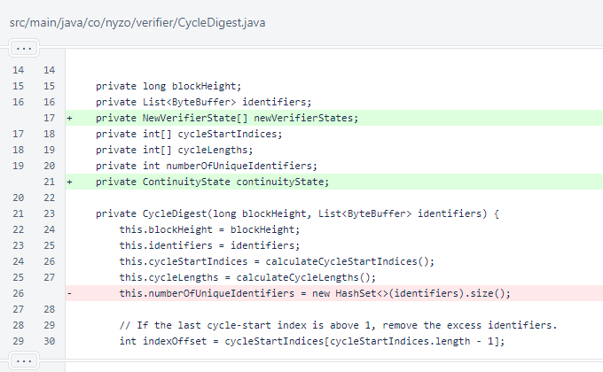
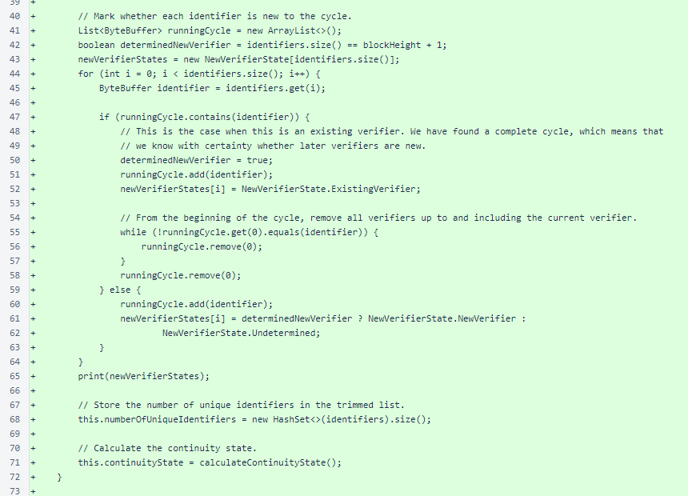
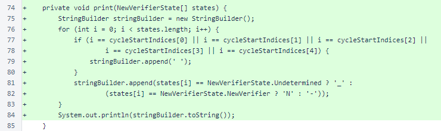
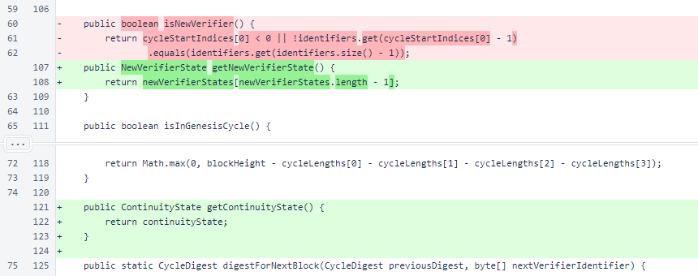
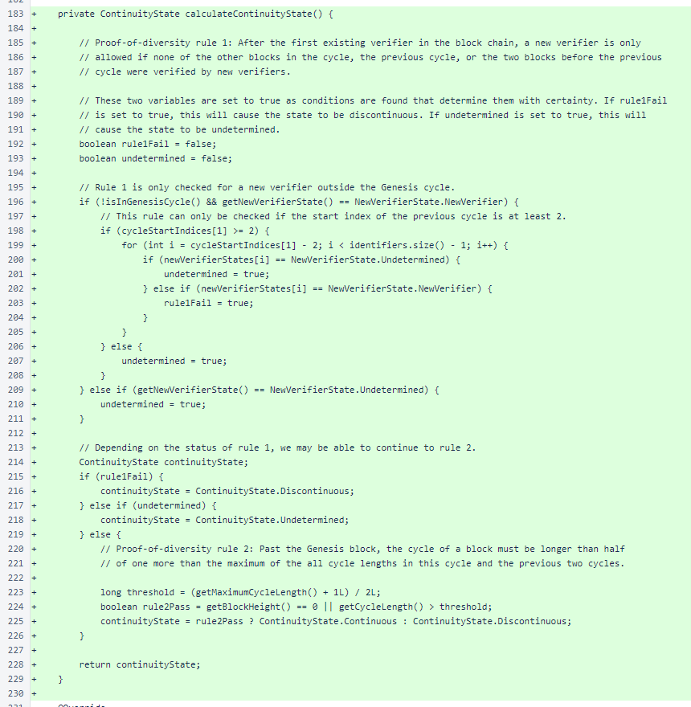
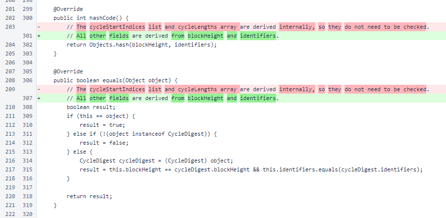
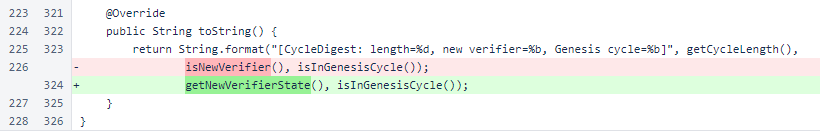
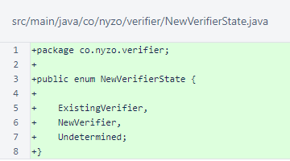
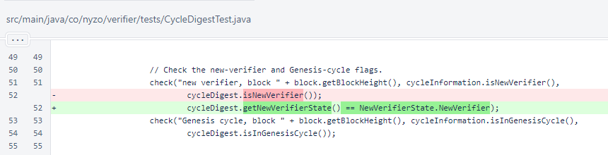

Nyzo version 610 (commit on GitHub) adds new-verifier states and continuity state to the CycleDigest class.
This version does not affect any run modes. It contains foundational work for future functional changes.
This version further develops the CycleDigest class that was introduced in version 596 and previously updated in version 598. This version adds new-verifier states and continuity state to the class.
In the CycleDigest class, the newVerifierStates and continuityState fields were added. Assignment of the numberOfUniqueIdentifiers field was moved later in the constructor.
After removing excess identifiers from the identifier list in the constructor, each identifier in the list is marked as NewVerifierState.ExistingVerifier, NewVerifierState.NewVerifier, or NewVerifierState.Undetermined. The list of states is printed for debugging purposes.
The number of unique identifiers is stored, and the continuity state is calculated.
The CycleDigest.print() method is a temporary helper method used for debugging. Undetermined states are displayed as underscores (_), existing verifiers are displayed as hyphens (-), and new verifiers are displayed as N. Spaces are placed between cycles.
The following shows how the cycle for block 0 of the blockchain is printed with this method.
N
The following shows how the cycle for block 63 of the blockchain is printed with this method.
_ ________- ------N--- ---------- ---------- ----------
The CycleDigest.isNewVerifier() method was replaced with the more informative CycleDigest.getNewVerifierState(). This method is much simpler now, as it returns a precomputed enumeration value.
The new CycleDigest.getContinuityState() method returns the precomputed continuityState value.
The CycleDigest.calculateContinuityState() method performs the same role as the Block.determineContinuityState() method, determining whether the rules of the proof of diversity are fulfilled. These rules, which control both entrance into and exit from the cycle, allow one version of the blockchain to be definitively identified as the authoritative version.
In CycleDigest.hashCode() and CycleDigest.equals(), the comments have been updated to reflect the additional fields now present in the class.
The CycleDigest.toString() method now displays the more precise new-verifier state.
The NewVerifierState enumeration provides the three values that may be calculated regarding a verifier's newness in the cycle: ExistingVerifier, NewVerifier, and Undetermined.
In CycleDigestTest.main(), the ternary enumeration is now displayed instead of the previous binary value.
